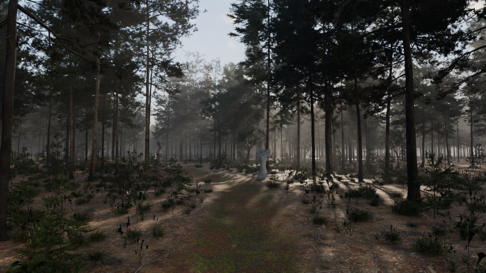
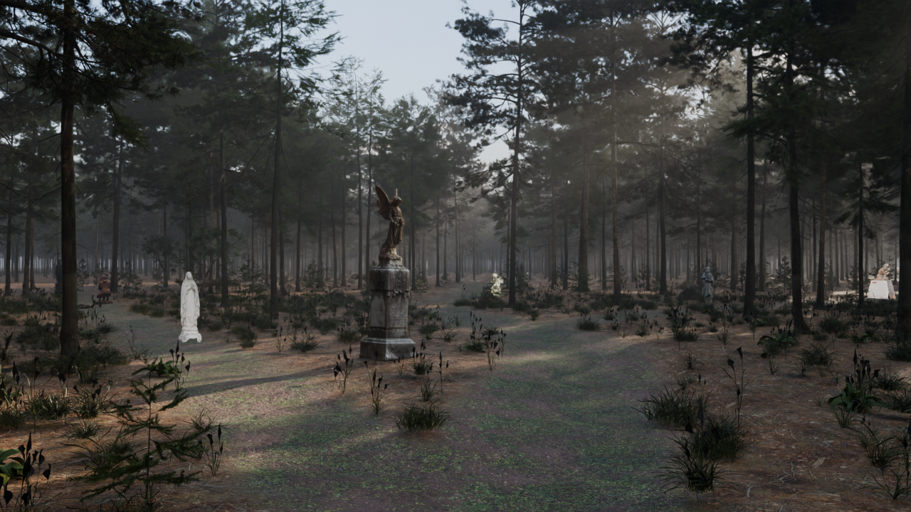
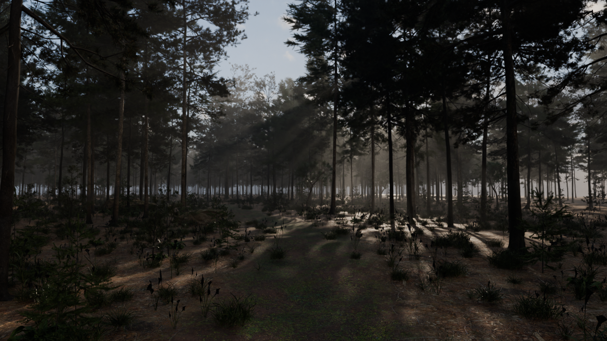

Gate 2 · Forest with paths and statues: test 04 for your approval

View A: the trail start. The same camera as test 02. The marble angel (Broken Wing) stands at the first bend.

View B: the first fork. The bronze memorial angel marks it. The left branch is the faint track behind her. One more statue is just visible far down the main trail.
What changed since test 02 (which you approved with "proceed")
- The path reads. A worn earth trail, and it forks. The side branches are deliberately fainter, so they can be missed, as the brief asks. One forks left at the memorial and one forks right further on.
- Horizon band gone. The far ground used to stop before the trees did. It now runs on, with about 3,850 more distant trees fading into the haze.
- Foreground lighter (exposure up and more skylight).
- All 13 forest statues are placed, weathered with grime and moss on their upward-facing surfaces. They're spaced so you meet them one at a time: one at the start, one marking the fork, one at the end of each branch, and the rest about 25 m apart down the main trail.
Known, next
- The dark spiky grass stalks in the foreground read as black silhouettes; I'll swap or thin them.
- The structures (one per category) go at the branch ends and clearings once you've picked them on
g1-assets/structures.html.
Where it came from

Test 03: the path was grey, the fork washed into one clearing, and six statues were visible at once, so it read like a sculpture park.

Test 02: the approved look, but with no path network and no statues yet.
All renders: Blender Cycles, path-traced, 48 samples, 1280×720, about 7 minutes each on this laptop's CPU. This is the look target; the site runs the same assets in real time with a live sun and baked bounce light.